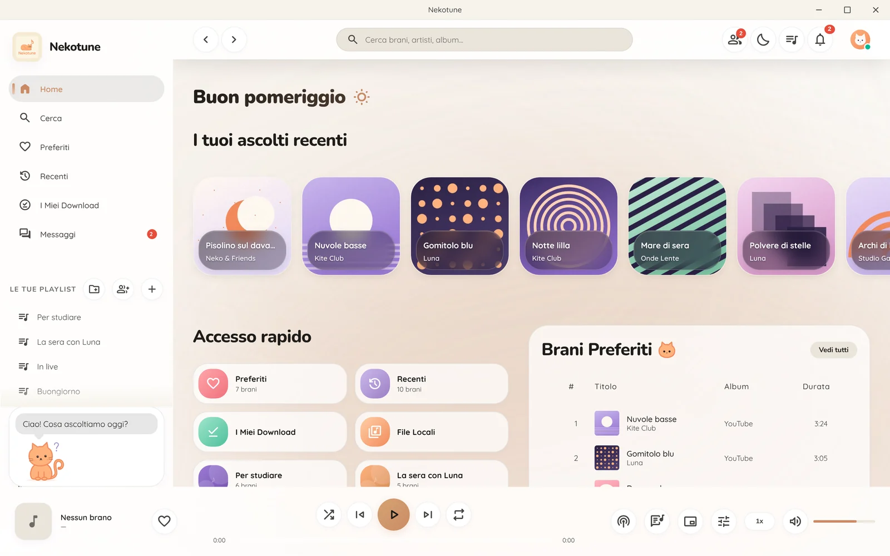
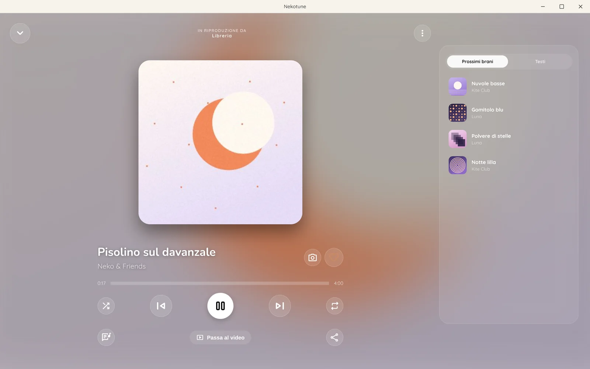
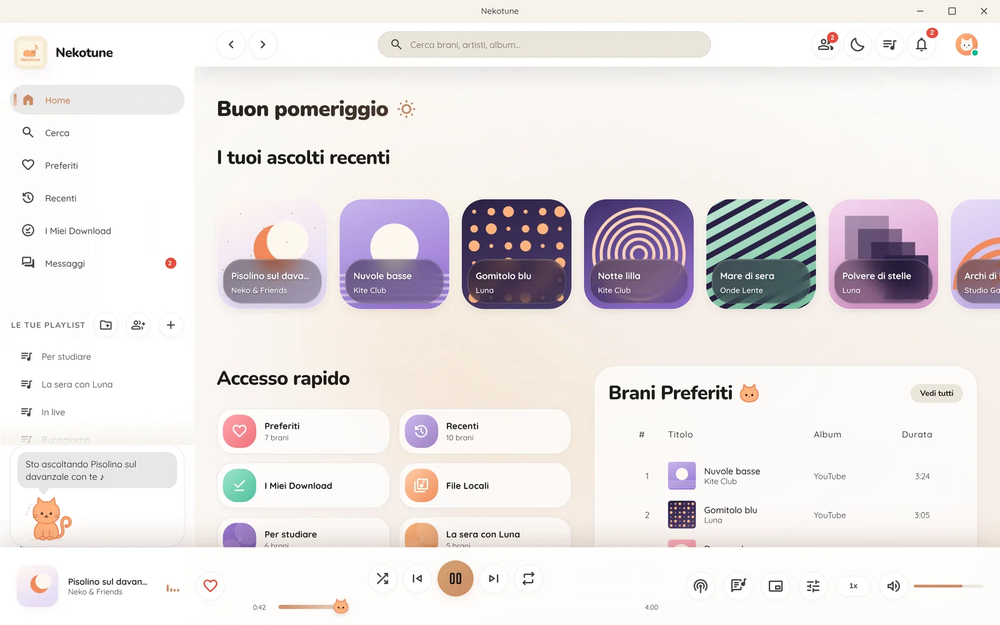
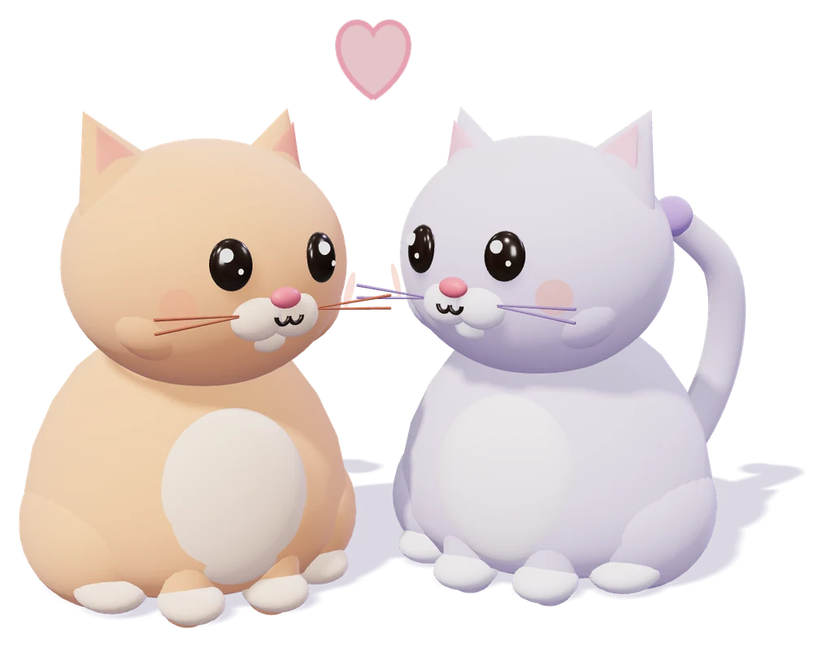
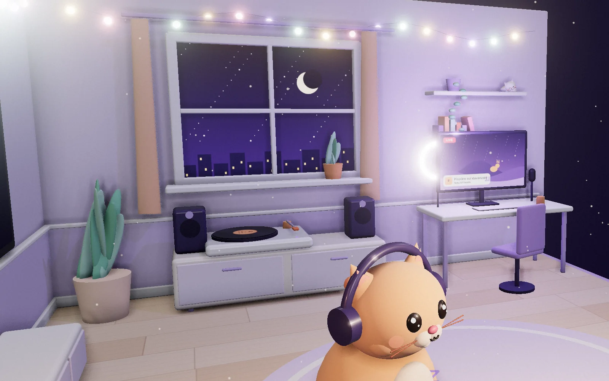

Musica con un gatto dentro.
NekoTune è un lettore musicale gratuito per Windows. Cerchi un brano, lo ascolti, lo salvi offline e lo condividi con gli amici, senza pubblicità. Neko ascolta con te.
Pisolino sul davanzale
Neko & Friends
Neko dorme. Premi play.
Nella stanza puoi toccare quasi tutto: Neko, il disco, la lampada, la finestra, la TV.
Il tuo player.
Premi play. Il resto lo fa lui.
A tutto schermo, quando il brano lo merita.
I testi seguono la voce.





- Il catalogo di YouTube Music brani, album, artisti, remix e cover
- Smart Radio la coda continua da sola con musica simile
- Offline salvi i brani e li ascolti senza internet
Testi che scorrono insieme al brano.
Le nuvole si abbassano sul tetto
e il gatto dorme sopra il mio quaderno
metto un disco, giro piano il volume
la città si spegne una luce alla volta
e resta solo questa melodia
che mi porta a casa.
Nell'app le righe si illuminano da sole, a tempo con la canzone. Queste le abbiamo scritte noi, per la pagina.
Sei temi pronti. Più quelli che crei tu.
Prova: scegli un tema e guarda NekoTune cambiare colore, come fa nell'app.

Con gli amici è meglio.
- Messaggi. Scrivi agli amici e mandi il brano che stai ascoltando con un clic.
- Sessione di gruppo. La stessa musica nello stesso momento, con la chat accanto.
- Playlist condivise. Una playlist che modificate in più persone.
- Cosa ascoltano gli altri. Lo vedi accanto al loro nome, e con un clic lo ascolti anche tu.

ehi, sei ancora sveglio?
in loop da stamattina
arrivo! metto le cuffie

In diretta, la tua musica la vede anche la chat.
- Widget per OBS. Il brano in riproduzione sopra la live, in tre stili, chiaro o scuro.
- Attività su Discord. "Sta ascoltando" sul tuo profilo, con copertina e tempo.
- NekoBot. Con
/nekotune nowil tuo server vede cosa stai ascoltando.

Porta Neko sul tuo computer.
NekoTune è gratis, per Windows 10 e 11. Le altre versioni sono nella pagina delle versioni.
L'account serve solo per amici, messaggi, sessioni e backup delle playlist.
Domande
È davvero gratis?
Sì. Non ci sono abbonamenti né pubblicità.
Da dove arriva la musica?
Dal catalogo pubblico di YouTube e YouTube Music. NekoTune non ospita brani: li cerca e li riproduce per te.
Serve un account?
Per ascoltare no. Serve per aggiungere amici, scrivere messaggi, fare sessioni di gruppo e tenere un backup di playlist e preferiti tra più computer.
Funziona senza internet?
Sì, con i brani che hai salvato offline nell'app o scaricato sul PC.
C'è per telefono?
Per ora NekoTune è per computer.
La musica di questa pagina è di qualcuno?
No: i tre brani del lettore di prova li suona il browser mentre li ascolti, accordo per accordo. Le copertine, i brani e gli amici che vedi nelle schermate e nei video dell'app sono inventati.